Inteligencia artificial
Inteligencia artificial
TR-4931: Recuperación ante desastres con VMware Cloud en Amazon Web Services y Guest Connect
 Sugerir cambios
Sugerir cambios
Autores: Chris Reno, Josh Powell y Suresh Toppay - Ingeniería de soluciones de NetApp
Descripción general
Un entorno y un plan de recuperación ante desastres contrastados es críticos para que las organizaciones puedan garantizar que las aplicaciones críticas se restauren rápidamente en caso de interrupción grave del servicio. Esta solución se centra en la demostración de casos prácticos de recuperación ante desastres centrándose en las tecnologías de VMware y NetApp, tanto en las instalaciones como con VMware Cloud en AWS.
NetApp tiene un largo historial de integración con VMware, tal y como muestran las decenas de miles de clientes que han elegido a NetApp como partner de almacenamiento para su entorno virtualizado. Esta integración continúa con las opciones conectadas a invitados en el cloud y las integraciones recientes también con almacenes de datos NFS. Esta solución se centra en el caso práctico conocido como almacenamiento conectado a invitados.
En el almacenamiento de conexión «guest», el VMDK invitado se pone en marcha en un almacén de datos con aprovisionamiento de VMware, y los datos de aplicaciones se alojan en iSCSI o NFS y se asignan directamente al equipo virtual. Las aplicaciones Oracle y MS SQL se utilizan para demostrar una situación de recuperación ante desastres, como se muestra en la siguiente figura.

Supuestos, requisitos previos y descripción general de los componentes
Antes de poner en marcha esta solución, revise la descripción general de los componentes, los requisitos previos necesarios para poner en marcha la solución y los supuestos que se realizan al documentar esta solución.
Realizar una recuperación ante desastres con SnapCenter
En esta solución, SnapCenter ofrece copias Snapshot coherentes con las aplicaciones para los datos de aplicaciones de SQL Server y Oracle. Esta configuración, junto con la tecnología SnapMirror, proporciona replicación de datos de alta velocidad entre nuestro AFF local y el clúster ONTAP FSX. Además, Veeam Backup & Replication proporciona funcionalidades de backup y restauración para nuestras máquinas virtuales.
En esta sección trataremos la configuración de SnapCenter, SnapMirror y Veeam tanto para backup como para restaurar.
Las siguientes secciones tratan la configuración y los pasos necesarios para completar una conmutación por error en el sitio secundario:
Configurar las relaciones de SnapMirror y los programas de retención
SnapCenter puede actualizar las relaciones de SnapMirror en el sistema de almacenamiento primario (primario > reflejo) y en los sistemas de almacenamiento secundario (primario > almacén) con la finalidad de archivarlas y retenerlos a largo plazo. Para ello, debe establecer e inicializar una relación de replicación de datos entre un volumen de destino y un volumen de origen mediante SnapMirror.
Los sistemas ONTAP de origen y de destino deben estar en redes con una relación entre iguales mediante Amazon VPC, una puerta de enlace de tránsito, AWS Direct Connect o una VPN de AWS.
Se requieren los siguientes pasos para configurar las relaciones de SnapMirror entre un sistema ONTAP en las instalaciones y FSX ONTAP:

|
Consulte la "Guía del usuario de FSX para ONTAP – ONTAP" Para obtener más información sobre la creación de relaciones de SnapMirror con FSX. |
Registre las interfaces lógicas de interconexión de clústeres de origen y destino
Para el sistema ONTAP de origen que reside en las instalaciones, puede recuperar la información de LIF entre clústeres desde System Manager o desde la CLI.
-
En ONTAP System Manager, desplácese a la página Network Overview y recupere las direcciones IP de Type: Interclúster configurado para comunicarse con el VPC donde se instaló FSX.
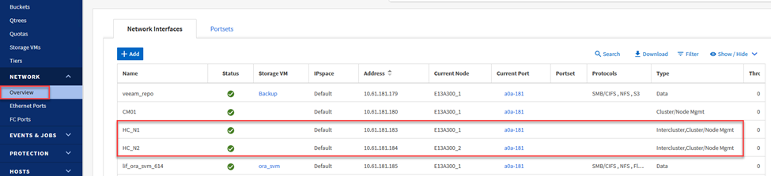
-
Para recuperar las direcciones IP de interconexión de clústeres para FSX, inicie sesión en la CLI y ejecute el siguiente comando:
FSx-Dest::> network interface show -role intercluster

Establecer una relación entre clústeres y FSX y ONTAP
Para establecer una relación entre iguales de clústeres entre clústeres ONTAP, se debe confirmar una clave de acceso única introducida en el clúster de ONTAP de inicio en el otro clúster de paridad.
-
Configure peering en el clúster FSX de destino mediante el
cluster peer createcomando. Cuando se le solicite, introduzca una clave de acceso única que se usará más adelante en el clúster de origen para finalizar el proceso de creación.FSx-Dest::> cluster peer create -address-family ipv4 -peer-addrs source_intercluster_1, source_intercluster_2 Enter the passphrase: Confirm the passphrase:
-
En el clúster de origen, puede establecer la relación de paridad de clústeres mediante ONTAP System Manager o CLI. En ONTAP System Manager, desplácese hasta Protection > Overview y seleccione Peer Cluster.

-
En el cuadro de diálogo Peer Cluster, rellene la información que corresponda:
-
Introduzca la clave de acceso que se utilizó para establecer la relación de clúster entre iguales en el clúster FSX de destino.
-
Seleccione
Yespara establecer una relación cifrada. -
Introduzca las direcciones IP de la LIF entre clústeres del clúster FSX de destino.
-
Haga clic en Iniciar Cluster peering para finalizar el proceso.

-
-
Compruebe el estado de la relación de paridad del clúster desde el clúster FSX con el siguiente comando:
FSx-Dest::> cluster peer show

Establecer la relación de paridad de SVM
El siguiente paso consiste en configurar una relación de SVM entre las máquinas virtuales de almacenamiento de destino y origen que contengan los volúmenes que se incluirán en las relaciones de SnapMirror.
-
En el clúster FSX de origen, use el siguiente comando de la CLI para crear la relación entre iguales de SVM:
FSx-Dest::> vserver peer create -vserver DestSVM -peer-vserver Backup -peer-cluster OnPremSourceSVM -applications snapmirror
-
En el clúster de ONTAP de origen, acepte la relación de paridad con ONTAP System Manager o CLI.
-
En ONTAP System Manager, vaya a Protection > Overview y seleccione Peer Storage VMs, en Storage VM peers.

-
En el cuadro de diálogo de la VM de almacenamiento del mismo nivel, rellene los campos necesarios:
-
La máquina virtual de almacenamiento de origen
-
El clúster de destino
-
La máquina virtual de almacenamiento de destino

-
-
Haga clic en Peer Storage VMs para completar el proceso de paridad de SVM.
Crear una política de retención de snapshots
SnapCenter gestiona los programas de retención para los backups que existen como copias Snapshot en el sistema de almacenamiento principal. Esto se establece al crear una política en SnapCenter. SnapCenter no gestiona las políticas de retención para backups que se conservan en sistemas de almacenamiento secundario. Estas políticas se gestionan por separado mediante una política de SnapMirror creada en el clúster FSX secundario y asociada con los volúmenes de destino que se encuentran en una relación de SnapMirror con el volumen de origen.
Al crear una política de SnapCenter, tiene la opción de especificar una etiqueta de política secundaria que se añada a la etiqueta de SnapMirror de cada snapshot generada al realizar un backup de SnapCenter.
|
|
En el almacenamiento secundario, estas etiquetas se adaptan a las reglas de normativas asociadas con el volumen de destino con el fin de aplicar la retención de copias Snapshot. |
El siguiente ejemplo muestra una etiqueta de SnapMirror presente en todas las copias de Snapshot generadas como parte de una política utilizada para los backups diarios de nuestros volúmenes de registros y base de datos de SQL Server.

Para obtener más información sobre la creación de políticas de SnapCenter para una base de datos de SQL Server, consulte "Documentación de SnapCenter".
Primero debe crear una política de SnapMirror con reglas que exijan el número de copias de snapshot que se retendrán.
-
Cree la política SnapMirror en el clúster FSX.
FSx-Dest::> snapmirror policy create -vserver DestSVM -policy PolicyName -type mirror-vault -restart always
-
Añada reglas a la política con etiquetas de SnapMirror que coincidan con las etiquetas de política secundaria especificadas en las políticas de SnapCenter.
FSx-Dest::> snapmirror policy add-rule -vserver DestSVM -policy PolicyName -snapmirror-label SnapMirrorLabelName -keep #ofSnapshotsToRetain
El siguiente script ofrece un ejemplo de una regla que se puede agregar a una directiva:
FSx-Dest::> snapmirror policy add-rule -vserver sql_svm_dest -policy Async_SnapCenter_SQL -snapmirror-label sql-ondemand -keep 15
Crear reglas adicionales para cada etiqueta de SnapMirror y el número de copias de Snapshot que se retendrán (período de retención).
Crear volúmenes de destino
Para crear un volumen de destino en FSX que será el destinatario de copias Snapshot de nuestros volúmenes de origen, ejecute el siguiente comando en FSX ONTAP:
FSx-Dest::> volume create -vserver DestSVM -volume DestVolName -aggregate DestAggrName -size VolSize -type DP
Crear las relaciones de SnapMirror entre los volúmenes de origen y de destino
Para crear una relación de SnapMirror entre un volumen de origen y de destino, ejecute el siguiente comando en la ONTAP de FSX:
FSx-Dest::> snapmirror create -source-path OnPremSourceSVM:OnPremSourceVol -destination-path DestSVM:DestVol -type XDP -policy PolicyName
Inicializar las relaciones de SnapMirror
Inicialice la relación de SnapMirror. Este proceso inicia una snapshot nueva generada del volumen de origen y la copia al volumen de destino.
FSx-Dest::> snapmirror initialize -destination-path DestSVM:DestVol
Implemente y configure servidores de Windows SnapCenter localmente.
Ponga en marcha Windows SnapCenter Server en las instalaciones
Esta solución utiliza SnapCenter de NetApp para realizar backups coherentes con las aplicaciones de bases de datos de SQL Server y Oracle. Junto con Veeam Backup & Replication para realizar backups de VMDK de máquinas virtuales, esto ofrece una completa solución de recuperación ante desastres para centros de datos en las instalaciones y basados en cloud.
El software SnapCenter está disponible en el sitio de soporte de NetApp y se puede instalar en sistemas Microsoft Windows que residan en un dominio o un grupo de trabajo. Encontrará una guía de planificación detallada e instrucciones de instalación en la "Centro de documentación de NetApp".
El software SnapCenter puede obtenerse en "este enlace".
Una vez instalado, puede acceder a la consola SnapCenter desde un explorador Web utilizando https://Virtual_Cluster_IP_or_FQDN:8146.
Después de iniciar sesión en la consola, debe configurar SnapCenter para las bases de datos de SQL Server y Oracle.
Añada controladoras de almacenamiento a SnapCenter
Para añadir controladoras de almacenamiento a SnapCenter, complete los siguientes pasos:
-
En el menú de la izquierda, seleccione Storage Systems y haga clic en New para comenzar el proceso de adición de controladoras de almacenamiento a SnapCenter.
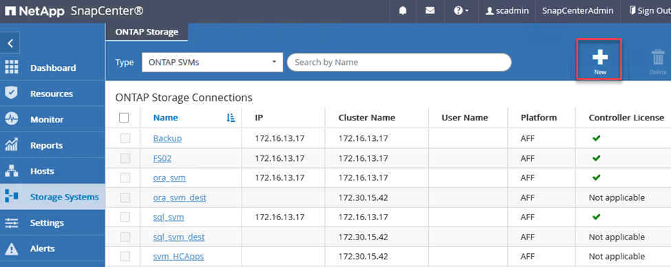
-
En el cuadro de diálogo Add Storage System, añada la dirección IP de gestión para el clúster de ONTAP en las instalaciones locales, y el nombre de usuario y la contraseña. A continuación, haga clic en Submit para iniciar la detección del sistema de almacenamiento.

-
Repita este proceso para agregar el sistema FSX ONTAP a SnapCenter. En este caso, seleccione más opciones en la parte inferior de la ventana Add Storage System y haga clic en la casilla de comprobación for Secondary para designar el sistema FSX como sistema de almacenamiento secundario actualizado con copias SnapMirror o nuestras copias Snapshot de backup principales.

Para obtener más información relacionada con la adición de sistemas de almacenamiento a SnapCenter, consulte la documentación en "este enlace".
Añada hosts a SnapCenter
El siguiente paso es agregar servidores de aplicaciones host a SnapCenter. El proceso es similar tanto para SQL Server como para Oracle.
-
En el menú de la izquierda, seleccione hosts y haga clic en Añadir para comenzar el proceso de añadir controladoras de almacenamiento a SnapCenter.
-
En la ventana Add hosts, añada el tipo de host, el nombre de host y las credenciales del sistema host. Seleccione el tipo de plugin. Para SQL Server, seleccione el plugin para Microsoft Windows y Microsoft SQL Server.

-
Para Oracle, rellene los campos obligatorios en el cuadro de diálogo Add Host y seleccione la casilla de comprobación del plugin de base de datos de Oracle. A continuación, haga clic en Enviar para iniciar el proceso de detección y añadir el host a SnapCenter.

Crear políticas de SnapCenter
Las políticas establecen las reglas específicas que se deben seguir para una tarea de backup. Incluyen, entre otros, la programación de backup, el tipo de replicación y cómo SnapCenter realiza el backup y los truncamiento de transacciones.
Puede acceder a las políticas en la sección Configuración del cliente web de SnapCenter.

Para obtener información completa sobre la creación de políticas para backups de SQL Server, consulte "Documentación de SnapCenter".
Para obtener toda la información sobre la creación de políticas para backups de Oracle, consulte "Documentación de SnapCenter".
Notas:
-
A medida que avanza por el asistente de creación de políticas, tenga una nota especial de la sección Replication. En esta sección, usted establece los tipos de copias secundarias de SnapMirror que desea realizar durante el proceso de backup.
-
La configuración "Actualizar SnapMirror después de crear una copia Snapshot local" hace referencia a la actualización de una relación de SnapMirror cuando esa relación existe entre dos máquinas virtuales de almacenamiento que residen en el mismo clúster.
-
La opción “Actualizar SnapVault después de crear una copia snapshot local” se utiliza para actualizar una relación de SnapMirror que existe entre dos clústeres independientes y entre un sistema ONTAP local y Cloud Volumes ONTAP o FSxN.
En la siguiente imagen, se muestran las opciones anteriores y su aspecto en el asistente de política de backup.
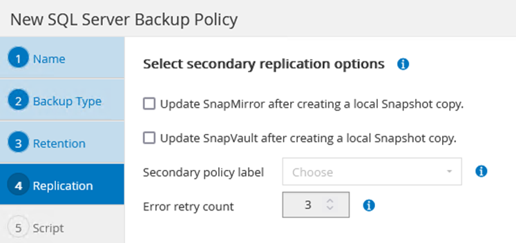
Crear grupos de recursos de SnapCenter
Los grupos de recursos permiten seleccionar los recursos de la base de datos que desea incluir en los backups y las políticas aplicadas a esos recursos.
-
Vaya a la sección Recursos del menú de la izquierda.
-
En la parte superior de la ventana, seleccione el tipo de recurso con el que trabajar (en este caso Microsoft SQL Server) y, a continuación, haga clic en Nuevo grupo de recursos.

La documentación de SnapCenter recoge detalles paso a paso para crear grupos de recursos para bases de datos de SQL Server y Oracle.
Para realizar backups de recursos de SQL, siga "este enlace".
Para realizar backups de recursos de Oracle, siga "este enlace".
Ponga en marcha y configure Veeam Backup Server
La solución utiliza el software Veeam Backup & Replication para realizar backups de nuestros equipos virtuales de aplicaciones y archivar una copia de los backups en un bloque de Amazon S3 mediante un repositorio de backup de escalado horizontal (SOBR) de Veeam. Veeam se pone en marcha en servidores Windows como parte de esta solución. Para obtener directrices específicas sobre la puesta en marcha de Veeam, consulte "Documentación técnica del centro de ayuda de Veeam".
Configurar el repositorio de backup de escalado horizontal de Veeam
Después de implementar y obtener licencias del software, puede crear un repositorio de backup de escalado horizontal (SOBR) como almacenamiento de destino para tareas de backup. También debería incluir un bloque de S3 como backup de datos de máquinas virtuales fuera de sus instalaciones para la recuperación ante desastres.
Consulte los siguientes requisitos previos antes de comenzar.
-
Cree un recurso compartido de archivos SMB en su sistema ONTAP local como almacenamiento objetivo para backups.
-
Cree un bloque de Amazon S3 para incluirlo en el SBR. Este es un repositorio para los backups fuera de las instalaciones.
Añada el almacenamiento de ONTAP a Veeam
En primer lugar, añada el clúster de almacenamiento de ONTAP y el sistema de archivos SMB/NFS asociado como infraestructura de almacenamiento en Veeam.
-
Abra la consola de Veeam e inicie sesión. Vaya a Storage Infrastructure y seleccione Add Storage.

-
En el asistente Add Storage, seleccione NetApp como proveedor de almacenamiento y, a continuación, seleccione Data ONTAP.
-
Introduzca la dirección IP de administración y active la casilla de verificación servidor dedicado a almacenamiento NAS. Haga clic en Siguiente.

-
Añada sus credenciales para acceder al clúster de ONTAP.

-
En la página NAS Filer, elija los protocolos que desea analizar y seleccione Next.

-
Complete las páginas Apply y Summary del asistente y haga clic en Finish para iniciar el proceso de detección de almacenamiento. Una vez finalizada la exploración, se añade el clúster ONTAP junto con los servidores dedicados a almacenamiento NAS como recursos disponibles.

-
Cree un repositorio de backup con los recursos compartidos NAS recién detectados. En Infraestructura de copia de seguridad, seleccione repositorios de copia de seguridad y haga clic en el elemento de menú Agregar repositorio.
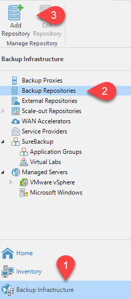
-
Siga todos los pasos del Asistente para crear un repositorio de copia de seguridad nuevo para crear el repositorio. Para obtener información detallada sobre la creación de repositorios de Veeam Backup, consulte "Documentación de Veeam".

Añada el bloque de Amazon S3 como repositorio de backup
El paso siguiente es añadir el almacenamiento Amazon S3 como repositorio de backup.
-
Vaya a Backup Infrastructure > repositorios de backup. Haga clic en Add Repository.
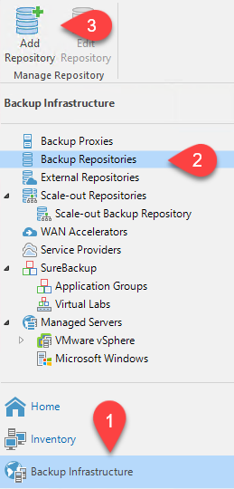
-
En el asistente Add Backup Repository, seleccione Object Storage y, a continuación, Amazon S3. Esto inicia el asistente Nuevo repositorio de almacenamiento de objetos.
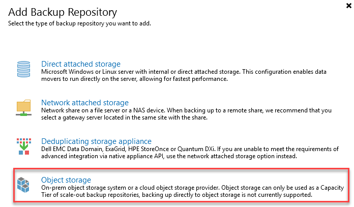
-
Proporcione un nombre para el repositorio de almacenamiento de objetos y haga clic en Next.
-
En la siguiente sección, introduzca sus credenciales. Necesita una clave de acceso de AWS y una clave secreta.

-
Una vez que se haya cargado la configuración de Amazon, seleccione su centro de datos, bloque y carpeta y haga clic en Apply. Por último, haga clic en Finalizar para cerrar el asistente.
Cree un repositorio de backup de escalado horizontal
Ahora que hemos añadido nuestros repositorios de almacenamiento a Veeam, podemos crear el SOBR para organizar automáticamente en niveles las copias de backup en nuestro almacenamiento de objetos Amazon S3 externo para la recuperación ante desastres.
-
En Backup Infrastructure, seleccione repositorios de escalado horizontal y, a continuación, haga clic en el elemento de menú Add Scale-Out Repository.
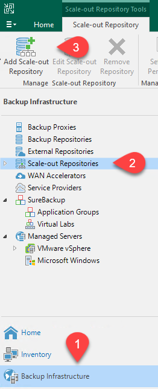
-
En el nuevo repositorio de copia de seguridad de escalado horizontal, proporcione un nombre para SOBR y haga clic en Siguiente.
-
Para el nivel de rendimiento, elija el repositorio de backup que contiene el recurso compartido de SMB que reside en el clúster de ONTAP local.

-
Para la Política de colocación, elija la ubicación de los datos o el rendimiento en función de sus requisitos. Seleccione Siguiente.
-
Para el nivel de capacidad, hemos ampliado el SOBR con el almacenamiento de objetos Amazon S3. Para la recuperación ante desastres, seleccione Copy backups to Object Storage tan pronto como se creen para garantizar una entrega puntual de nuestros backups secundarios.

-
Por último, seleccione aplicar y Finalizar para finalizar la creación del SORR.
Crear las tareas del repositorio de backup de escalado horizontal
El paso final para configurar Veeam es crear tareas de backup utilizando el SOBR recién creado como destino del backup. La creación de empleos de respaldo es una parte normal del repertorio de cualquier administrador de almacenamiento y no cubrimos los pasos detallados aquí. Si desea obtener más información acerca de la creación de trabajos de backup en Veeam, consulte "Documentación técnica del centro de ayuda de Veeam".
Configuración y herramientas de backup y recuperación de BlueXP
Para llevar a cabo una conmutación al nodo de respaldo de los equipos virtuales de aplicación y los volúmenes de base de datos en los servicios de VMware Cloud Volume que se ejecutan en AWS, debe instalar y configurar una instancia en ejecución tanto de SnapCenter Server como de Veeam Backup and Replication Server. Una vez finalizada la conmutación al respaldo, también debe configurar estas herramientas para reanudar las operaciones de backup normales hasta que se haya planificado y ejecutado una conmutación tras recuperación al centro de datos en las instalaciones.
Implemente un servidor SnapCenter secundario de Windows
El servidor SnapCenter se pone en marcha en VMware Cloud SDDC o se instala en una instancia EC2 que reside en un VPC con conectividad de red al entorno cloud de VMware.
El software SnapCenter está disponible en el sitio de soporte de NetApp y se puede instalar en sistemas Microsoft Windows que residan en un dominio o un grupo de trabajo. Encontrará una guía de planificación detallada e instrucciones de instalación en la "Centro de documentación de NetApp".
Puede encontrar el software de SnapCenter en "este enlace".
Configurar servidor SnapCenter secundario de Windows
Para realizar una restauración de datos de aplicación reflejados en FSX ONTAP, primero debe realizar una restauración completa de la base de datos de SnapCenter local. Una vez completado este proceso, se restablece la comunicación con los equipos virtuales y los backups de aplicaciones pueden reanudarse usando FSX ONTAP como almacenamiento principal.
Para ello, debe completar los siguientes elementos en el servidor SnapCenter:
-
Configure el nombre del equipo para que sea idéntico al servidor SnapCenter local original.
-
Configure las redes para comunicarse con VMware Cloud y la instancia de FSX ONTAP.
-
Complete el procedimiento para restaurar la base de datos de SnapCenter.
-
Confirmar que SnapCenter se encuentra en el modo de recuperación ante desastres para garantizar que FSX es ahora el almacenamiento principal de los backups.
-
Confirmar que se restablece la comunicación con las máquinas virtuales restauradas.
Para obtener más información sobre cómo completar estos pasos, consulte la sección "Proceso de restauración de bases de datos de SnapCenter".
Ponga en marcha el servidor de replicación de & de Veeam secundario
Puede instalar el servidor de Veeam Backup & Replication en un servidor de Windows en el cloud de VMware en AWS o en una instancia de EC2. Para obtener instrucciones detalladas sobre la implementación, consulte "Documentación técnica del centro de ayuda de Veeam".
Configurar el servidor de replicación secundario de Veeam Backup &
Para realizar una restauración de máquinas virtuales cuyo backup se ha realizado en el almacenamiento de Amazon S3, debe instalar Veeam Server en un servidor Windows y configurarlo para comunicarse con VMware Cloud, FSX ONTAP y el bloque de S3 que contiene el repositorio de backup original. También debe tener un nuevo repositorio de backup configurado en FSX ONTAP para realizar nuevos backups de las máquinas virtuales después de restaurarlas.
Para realizar este proceso, deben completarse los siguientes elementos:
-
Configurar las redes para que se comuniquen con VMware Cloud, FSX ONTAP y el bloque de S3 que contiene el repositorio de backup original.
-
Configure un recurso compartido de SMB en FSX ONTAP y así sea un nuevo repositorio de backup.
-
Monte el bloque original de S3 que se utilizó como parte del repositorio de backup de escalado horizontal en las instalaciones.
-
Después de restaurar la máquina virtual, establezca nuevas tareas de backup para proteger las máquinas virtuales de SQL y Oracle.
Si desea obtener más información sobre la restauración de máquinas virtuales mediante Veeam, consulte la sección "Restaure equipos virtuales de aplicación con Veeam Full Restore".
Backup de la base de datos de SnapCenter para recuperación ante desastres
SnapCenter permite realizar las tareas de backup y recuperación de sus datos de configuración y base de datos MySQL subyacentes con el fin de recuperar el servidor SnapCenter en caso de desastre. Para nuestra solución, recuperamos la base de datos y la configuración de SnapCenter en una instancia de EC2 de AWS que reside en nuestro VPC. Para obtener más información sobre este paso, consulte "este enlace".
Requisitos previos de backup de SnapCenter
Se requieren los siguientes requisitos previos para el backup de SnapCenter:
-
Se creó un volumen y un recurso compartido de SMB en el sistema ONTAP en las instalaciones para localizar los archivos de configuración y base de datos con backup.
-
Una relación de SnapMirror entre el sistema ONTAP en las instalaciones y FSX o CVO en la cuenta de AWS. Esta relación se utiliza para transportar la snapshot que contiene la base de datos y los archivos de configuración de SnapCenter con backup.
-
Windows Server instalado en la cuenta del cloud, ya sea en una instancia de EC2 o en una máquina virtual del centro de datos definido por software de VMware Cloud.
-
SnapCenter instalado en la instancia o máquina virtual de EC2 de Windows en VMware Cloud.
Resumen del proceso de backup y restauración de SnapCenter
-
Cree un volumen en el sistema ONTAP local para alojar la base de datos de copia de seguridad y los archivos de configuración.
-
Configuración de una relación de SnapMirror entre on-premises y FSX/CVO.
-
Monte el recurso compartido de SMB.
-
Recupere el token de autorización de Swagger para realizar tareas de API.
-
Inicie el proceso de restauración de la base de datos.
-
Utilice la utilidad xcopy para copiar el directorio local de la base de datos y el archivo de configuración en el recurso compartido SMB.
-
En FSX, cree un clon del volumen ONTAP (copiado mediante SnapMirror desde las instalaciones).
-
Monte el recurso compartido de SMB de FSX a EC2/VMware Cloud.
-
Copie el directorio de restauración del recurso compartido SMB en un directorio local.
-
Ejecute el proceso de restauración de SQL Server desde Swagger.
Realice un backup de la base de datos de SnapCenter y la configuración
SnapCenter proporciona una interfaz de cliente web para ejecutar comandos de la API DE REST. Para obtener información sobre cómo acceder a las API DE REST a través de Swagger, consulte la documentación de SnapCenter en "este enlace".
Inicie sesión en Swagger y obtenga el token de autorización
Después de navegar por la página de Swagger, debe recuperar un token de autorización para iniciar el proceso de restauración de base de datos.
-
Acceda a la página web de API de SnapCenter Swagger en https://<SnapCenter Server IP>:8146/swagger/.

-
Expanda la sección Auth y haga clic en Inténtelo.

-
En el área UserOperationContext, rellene las credenciales y la función de SnapCenter y haga clic en Ejecutar.
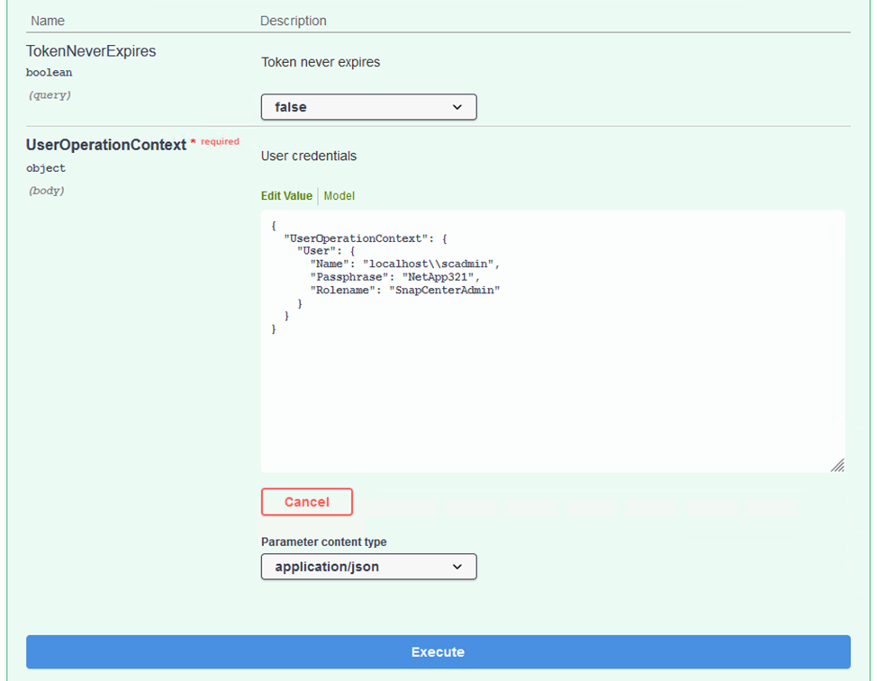
-
En el cuerpo de respuesta que aparece a continuación, puede ver el token. Copie el texto del token para la autenticación al ejecutar el proceso de backup.

Realizar un backup de base de datos de SnapCenter
A continuación, vaya al área de recuperación ante desastres de la página Swagger para iniciar el proceso de backup de SnapCenter.
-
Expanda el área de recuperación ante desastres haciendo clic en ella.
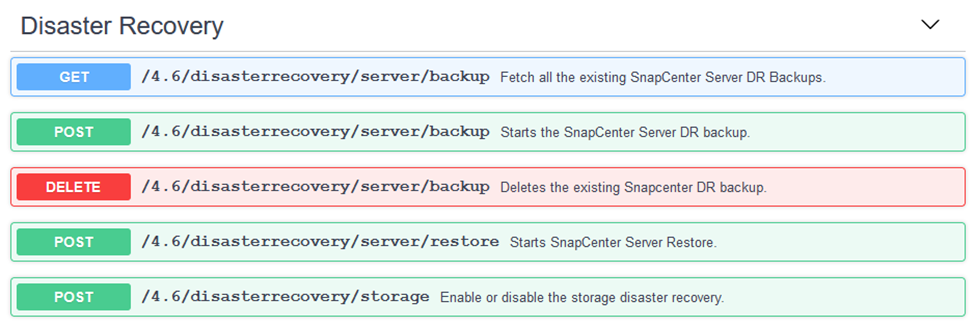
-
Expanda el
/4.6/disasterrecovery/server/backupY haga clic en probar.
-
En la sección SmDRBackupRequest, añada la ruta de acceso correcta al destino local y seleccione Execute para iniciar el backup de la base de datos y la configuración de SnapCenter.
El proceso de backup no permite realizar el backup directamente en un recurso compartido de archivos NFS o CIFS. 
Supervise el trabajo de backup desde SnapCenter
Inicie sesión en SnapCenter para revisar los archivos de registro al iniciar el proceso de restauración de la base de datos. En la sección Supervisión, puede ver los detalles del backup de recuperación ante desastres del servidor SnapCenter.
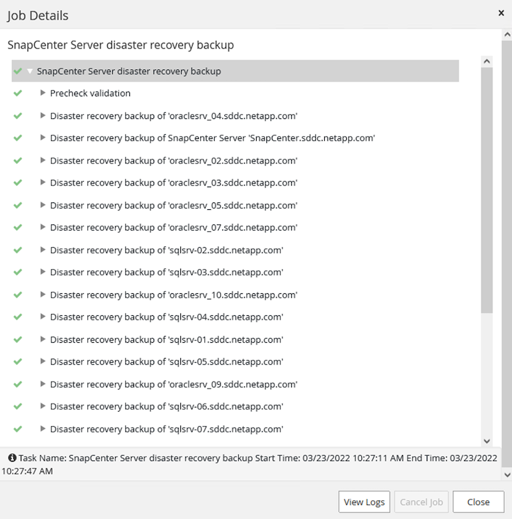
Utilice la utilidad XCOPY para copiar el archivo de copia de seguridad de la base de datos en el recurso compartido SMB
A continuación, debe mover el backup de la unidad local del servidor SnapCenter al recurso compartido CIFS que se utiliza para copiar los datos en la ubicación secundaria ubicada en la instancia de FSX en AWS. Utilice xcopy con opciones específicas que conserven los permisos de los archivos.
Abra un símbolo del sistema como Administrador. Desde el símbolo del sistema, introduzca los siguientes comandos:
xcopy <Source_Path> \\<Destination_Server_IP>\<Folder_Path> /O /X /E /H /K xcopy c:\SC_Backups\SnapCenter_DR \\10.61.181.185\snapcenter_dr /O /X /E /H /K
Conmutación al respaldo
Desastre ocurre en el sitio principal
Para un desastre que se produzca en el centro de datos principal en las instalaciones, nuestro escenario incluye la conmutación al respaldo en un sitio secundario que reside en la infraestructura de Amazon Web Services mediante VMware Cloud en AWS. Asumimos que ya no se puede acceder a las máquinas virtuales y al clúster ONTAP que ofrecemos en las instalaciones. Además, ya no se puede acceder a las máquinas virtuales SnapCenter y Veeam y deben reconstruirse en nuestro sitio secundario.
En esta sección se aborda la conmutación por error de nuestra infraestructura al cloud y se tratan los siguientes temas:
-
Restauración de la base de datos de SnapCenter. Una vez establecido un nuevo servidor SnapCenter, restaure los archivos de configuración y de base de datos de MySQL y coloque la base de datos en modo de recuperación ante desastres para permitir que el almacenamiento FSX secundario se convierta en el dispositivo de almacenamiento primario.
-
Restaure los equipos virtuales de aplicaciones mediante Veeam Backup & Replication. Conecte el almacenamiento S3 que contiene los backups de la máquina virtual, importe los backups y restáutelos en VMware Cloud en AWS.
-
Restaure los datos de aplicaciones de SQL Server mediante SnapCenter.
-
Restaure los datos de la aplicación Oracle mediante SnapCenter.
Proceso de restauración de bases de datos de SnapCenter
SnapCenter admite escenarios de recuperación ante desastres, ya que permite el backup y la restauración de sus archivos de configuración y base de datos de MySQL. Esto permite a un administrador mantener backups periódicos de la base de datos de SnapCenter en el centro de datos local y restaurar posteriormente esa base de datos a una base de datos de SnapCenter secundaria.
Para acceder a los archivos de copia de seguridad de SnapCenter en el servidor SnapCenter remoto, siga estos pasos:
-
Rompa la relación de SnapMirror del clúster FSX y haga que el volumen sea de lectura/escritura.
-
Cree un servidor CIFS (si es necesario) y cree un recurso compartido CIFS que señale la ruta de unión del volumen clonado.
-
Utilice xcopy para copiar los archivos de copia de seguridad en un directorio local del sistema SnapCenter secundario.
-
Instale SnapCenter v4.6.
-
Asegúrese de que el servidor SnapCenter tiene el mismo FQDN que el servidor original. Esto es necesario para que la restauración de la base de datos se realice correctamente.
Para iniciar el proceso de restauración, lleve a cabo los siguientes pasos:
-
Acceda a la página web de API de Swagger para el servidor SnapCenter secundario y siga las instrucciones anteriores para obtener un token de autorización.
-
Desplácese hasta la sección Disaster Recovery de la página Swagger, seleccione `/4.6/disasterrecovery/server/restore`Y haga clic en probar.
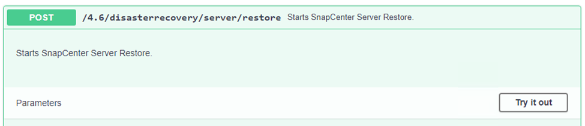
-
Pegue el token de autorización y, en la sección SmDRResterRequest, pegue el nombre del backup y el directorio local del servidor SnapCenter secundario.

-
Seleccione el botón Ejecutar para iniciar el proceso de restauración.
-
En SnapCenter, desplácese hasta la sección Supervisión para ver el progreso del trabajo de restauración.


-
Para habilitar las restauraciones de SQL Server a partir de almacenamiento secundario, es necesario cambiar la base de datos de SnapCenter al modo de recuperación ante desastres. Esto se realiza como una operación independiente y se inicia en la página web de la API de Swagger.
-
Desplácese hasta la sección Disaster Recovery y haga clic en
/4.6/disasterrecovery/storage. -
Pegar en el token de autorización de usuario.
-
En la sección SmSetDisasterRecoverySettingsRequest, cambie
EnableDisasterRecoverparatrue. -
Haga clic en Execute para habilitar el modo de recuperación ante desastres para SQL Server.

Consulte los comentarios sobre procedimientos adicionales. -
Restaure equipos virtuales de aplicación con la restauración completa de Veeam
Cree un repositorio de backup e importe los backups desde S3
Desde el servidor de Veeam secundario, importe los backups desde el almacenamiento S3 y restaure las máquinas virtuales de SQL Server y Oracle al clúster de VMware Cloud.
Para importar los backups del objeto S3 que formaba parte del repositorio de backup de escalado horizontal en las instalaciones, complete los siguientes pasos:
-
Vaya a repositorios de copia de seguridad y haga clic en Añadir repositorio en el menú superior para abrir el asistente Añadir repositorio de copia de seguridad. En la primera página del asistente, seleccione Object Storage como el tipo de repositorio de backup.

-
Seleccione Amazon S3 como tipo de almacenamiento de objetos.

-
En la lista de Amazon Cloud Storage Services, seleccione Amazon S3.

-
Seleccione las credenciales introducidas previamente en la lista desplegable o añada una nueva credencial para acceder al recurso de almacenamiento en cloud. Haga clic en Siguiente para continuar.
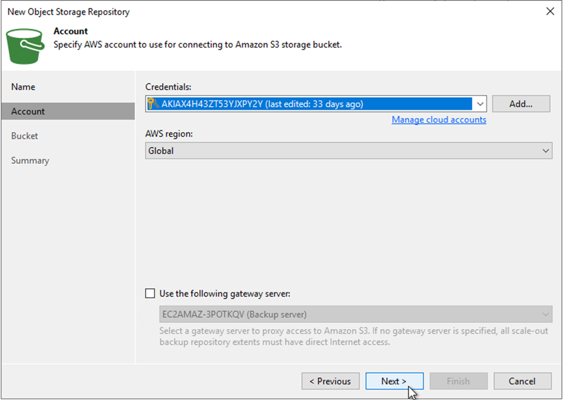
-
En la página Bucket, introduzca el centro de datos, el bloque, la carpeta y las opciones que desee. Haga clic en Apply.

-
Finalmente, seleccione Finalizar para completar el proceso y agregar el repositorio.
Importe los backups desde el almacenamiento de objetos S3
Para importar los backups desde el repositorio de S3 que se agregó en la sección anterior, complete los siguientes pasos.
-
En el repositorio de backup de S3, seleccione Import backups para abrir el asistente Import backups.

-
Una vez creados los registros de la base de datos para la importación, seleccione Siguiente y, a continuación, Finalizar en la pantalla de resumen para iniciar el proceso de importación.
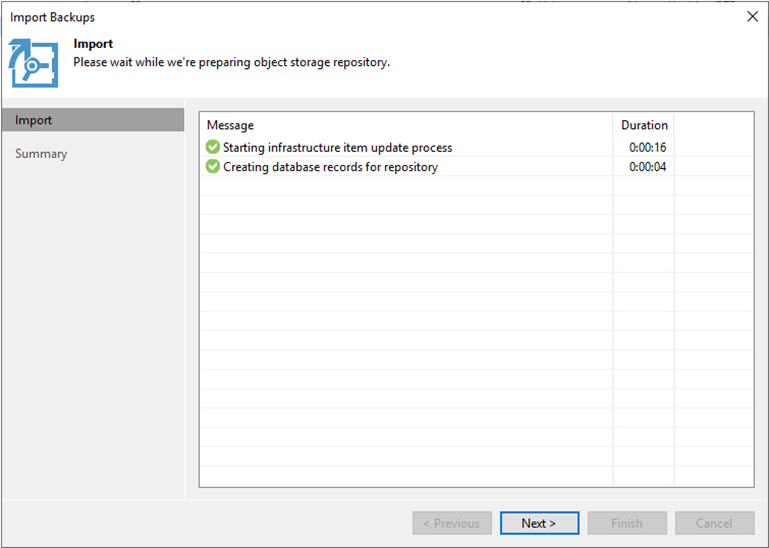
-
Una vez finalizada la importación, puede restaurar máquinas virtuales en el clúster de cloud de VMware.

Restaure equipos virtuales de aplicación con la funcionalidad de restauración completa de Veeam en VMware Cloud
Para restaurar las máquinas virtuales de SQL y Oracle en VMware Cloud en el dominio/clúster de carga de trabajo de AWS, realice los siguientes pasos.
-
En la página Veeam Home, seleccione el almacenamiento de objetos que contiene los backups importados, seleccione las máquinas virtuales que desea restaurar y, a continuación, haga clic con el botón derecho en Restore entire VM.

-
En la primera página del asistente Full VM Restore, modifique las máquinas virtuales para realizar el backup si lo desea y seleccione Next.

-
En la página Restore Mode, seleccione Restore to a New Location o with Disfruta de una configuración diferente.
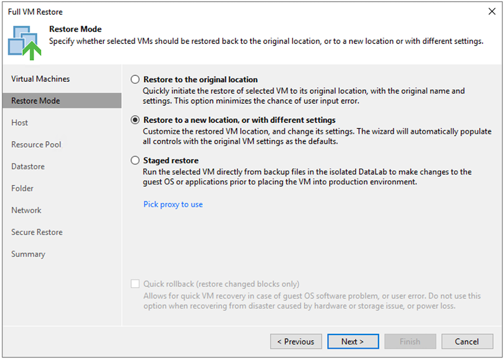
-
En la página host, seleccione el host o el clúster de destino ESXi al que desea restaurar la máquina virtual.

-
En la página datastores, seleccione la ubicación del almacén de datos de destino para los archivos de configuración y el disco duro.

-
En la página Network, asigne las redes originales en el equipo virtual a las redes en la nueva ubicación de destino.


-
Seleccione si desea analizar el malware en el equipo virtual restaurado, revise la página de resumen y haga clic en Finish para iniciar la restauración.
Restauración de datos de aplicaciones de SQL Server
El siguiente proceso proporciona instrucciones sobre cómo recuperar un servidor SQL Server en VMware Cloud Services en AWS en caso de un desastre que haga que el sitio local deje de funcionar.
Se asume que los siguientes requisitos previos están completos para continuar con los pasos de recuperación:
-
La máquina virtual de Windows Server se ha restaurado en el cloud SDDC de VMware mediante Veeam Full Restore.
-
Se ha establecido un servidor SnapCenter secundario y se ha completado la restauración y configuración de bases de datos SnapCenter siguiendo los pasos descritos en la sección "Resumen del proceso de backup y restauración de SnapCenter."
VM: Configuración posterior a la restauración para máquina virtual de SQL Server
Una vez finalizada la restauración de la máquina virtual, debe configurar la red y otros elementos durante la preparación para volver a detectar la máquina virtual host en SnapCenter.
-
Asigne nuevas direcciones IP para Management e iSCSI o NFS.
-
Una el host al dominio de Windows.
-
Añada los nombres de host a DNS o al archivo hosts del servidor SnapCenter.
|
|
Si el plugin de SnapCenter se implementó mediante credenciales de dominio diferentes al dominio actual, es necesario cambiar la cuenta de inicio de sesión del plugin para el servicio de Windows en la máquina virtual de SQL Server. Después de cambiar la cuenta de inicio de sesión, reinicie los servicios de SnapCenter SMCore, del plugin para Windows y del plugin para SQL Server. |
|
|
Para volver a detectar automáticamente las máquinas virtuales restauradas en SnapCenter, el FQDN debe ser idéntico a la máquina virtual que se añadió originalmente a SnapCenter en las instalaciones. |
Configurar almacenamiento FSX para la restauración de SQL Server
Para realizar el proceso de restauración de recuperación ante desastres de una máquina virtual de SQL Server, debe interrumpir la relación de SnapMirror existente del clúster FSX y otorgar acceso al volumen. Para ello, lleve a cabo los siguientes pasos.
-
Para romper la relación de SnapMirror existente de la base de datos de SQL Server y los volúmenes de registro, ejecute el siguiente comando desde la CLI de FSX:
FSx-Dest::> snapmirror break -destination-path DestSVM:DestVolName
-
Conceda acceso a la LUN mediante la creación de un grupo de iniciadores que contenga el IQN de iSCSI de la máquina virtual de SQL Server Windows:
FSx-Dest::> igroup create -vserver DestSVM -igroup igroupName -protocol iSCSI -ostype windows -initiator IQN
-
Finalmente, asigne las LUN al iGroup que acaba de crear:
FSx-Dest::> lun mapping create -vserver DestSVM -path LUNPath igroup igroupName
-
Para encontrar el nombre de ruta, ejecute el
lun showcomando.
Configure la máquina virtual de Windows para acceder a iSCSI y detectar los sistemas de archivos
-
Desde la máquina virtual de SQL Server, configure el adaptador de red iSCSI para que se comunique en el grupo de puertos de VMware que se ha establecido con conectividad a las interfaces de destino iSCSI de la instancia de FSX.
-
Abra la utilidad iSCSI Initiator Properties y borre la configuración de conectividad antigua de las fichas Discovery, Favorite Targets y Targets.
-
Busque las direcciones IP para acceder a la interfaz lógica iSCSI en la instancia/clúster de FSX. Encontrará información en la consola de AWS en Amazon FSX > ONTAP > Storage Virtual Machines.
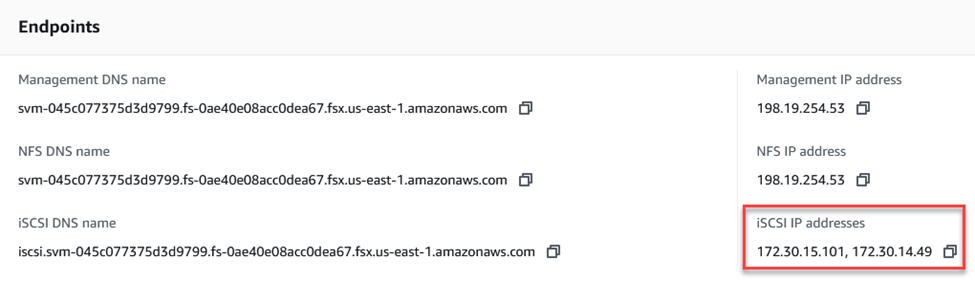
-
En la pestaña Discovery, haga clic en Discover Portal e introduzca las direcciones IP para los destinos iSCSI de FSX.
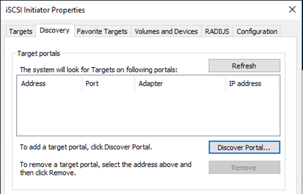

-
En la ficha destino, haga clic en conectar, seleccione Activar Multi-Path si es apropiado para su configuración y, a continuación, haga clic en Aceptar para conectarse al destino.

-
Abra la utilidad Administración de equipos y ponga los discos en línea. Compruebe que conservan las mismas letras de unidad que tenían anteriormente.

Conecte las bases de datos de SQL Server
-
En la máquina virtual de SQL Server, abra Microsoft SQL Server Management Studio y seleccione Attach para iniciar el proceso de conexión a la base de datos.

-
Haga clic en Agregar y desplácese a la carpeta que contiene el archivo de base de datos principal de SQL Server, selecciónelo y haga clic en Aceptar.

-
Si los registros de transacciones se encuentran en una unidad independiente, elija la carpeta que contiene el registro de transacciones.
-
Cuando haya terminado, haga clic en Aceptar para adjuntar la base de datos.

Confirme la comunicación de SnapCenter con el plugin de SQL Server
Cuando la base de datos SnapCenter se restaura a su estado anterior, se vuelven a detectar automáticamente los hosts de SQL Server. Para que esto funcione correctamente, tenga en cuenta los siguientes requisitos previos:
-
SnapCenter debe ponerse en modo de recuperación ante desastres. Esto se puede realizar a través de la API de Swagger o con la configuración global en recuperación ante desastres.
-
El FQDN de SQL Server debe ser idéntico a la instancia que se ejecutaba en el centro de datos local.
-
Debe romperse la relación de SnapMirror original.
-
Las LUN que contienen la base de datos deben montarse en la instancia de SQL Server y la base de datos adjunta.
Para confirmar que SnapCenter está en modo de recuperación ante desastres, vaya a Configuración desde el cliente web SnapCenter. Vaya a la ficha Configuración global y, a continuación, haga clic en recuperación ante desastres. Asegúrese de que la casilla Habilitar recuperación ante desastres esté habilitada.

Restaure los datos de la aplicación Oracle
El siguiente proceso proporciona instrucciones sobre cómo recuperar los datos de aplicaciones de Oracle en VMware Cloud Services en AWS en caso de un desastre que haga que el sitio local deje de funcionar.
Complete los siguientes requisitos previos para continuar con los pasos de recuperación:
-
La máquina virtual del servidor Oracle Linux se ha restaurado en el VMware Cloud SDDC con Veeam Full Restore.
-
Se ha establecido un servidor SnapCenter secundario y se han restaurado los archivos de base de datos y configuración de SnapCenter siguiendo los pasos descritos en esta sección "Resumen del proceso de backup y restauración de SnapCenter."
Configurar FSX para la restauración de Oracle – rompa la relación de SnapMirror
Para que los servidores Oracle puedan acceder a los volúmenes de almacenamiento secundario alojados en la instancia de FSxN, primero debe romper la relación de SnapMirror existente.
-
Después de iniciar sesión en la CLI de FSX, ejecute el siguiente comando para ver los volúmenes filtrados por el nombre correcto.
FSx-Dest::> volume show -volume VolumeName*

-
Ejecute el siguiente comando para interrumpir las relaciones de SnapMirror existentes.
FSx-Dest::> snapmirror break -destination-path DestSVM:DestVolName

-
Actualice la ruta de unión en el cliente web de Amazon FSX:

-
Añada el nombre de la ruta de unión y haga clic en Update. Especifique esta ruta de unión cuando monte el volumen NFS desde el servidor de Oracle.
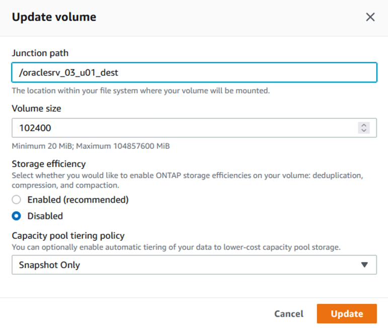
Montar volúmenes de NFS en Oracle Server
En Cloud Manager, puede obtener el comando de montaje con la dirección IP de LIF NFS correcta para montar los volúmenes NFS que contienen los registros y archivos de la base de datos de Oracle.
-
En Cloud Manager, acceda a la lista de volúmenes para el clúster FSX.

-
En el menú Action, seleccione Mount Command para ver y copiar el comando Mount que se va a utilizar en nuestro servidor Oracle Linux.
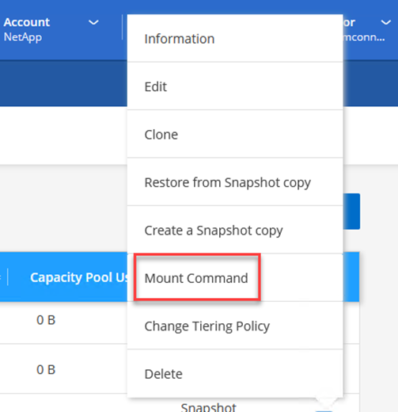

-
Monte el sistema de archivos NFS en el servidor Oracle Linux. Los directorios para montar el recurso compartido de NFS ya existen en el host Oracle Linux.
-
Desde el servidor Oracle Linux, utilice el comando Mount para montar los volúmenes NFS.
FSx-Dest::> mount -t oracle_server_ip:/junction-path
Repita este paso con cada volumen asociado con las bases de datos de Oracle.
Para que el montaje NFS sea coherente tras reiniciar, edite el /etc/fstabarchivo para incluir los comandos de montaje. -
Reinicie el servidor Oracle. Las bases de datos Oracle deben iniciarse normalmente y estar disponibles para su uso.
Conmutación tras recuperación
Una vez completado correctamente el proceso de conmutación al nodo de respaldo descrito en esta solución, SnapCenter y Veeam reanudan sus funciones de backup que se ejecutan en AWS. Además, FSX para ONTAP ahora se designa como almacenamiento principal sin relaciones de SnapMirror existentes con el centro de datos local original. Tras la reanudación de la función normal en las instalaciones, puede utilizar un proceso idéntico al descrito en esta documentación para reflejar los datos de nuevo en el sistema de almacenamiento ONTAP local.
Como también se describe en esta documentación, puede configurar SnapCenter para que refleje los volúmenes de datos de aplicaciones del FSX para ONTAP a un sistema de almacenamiento ONTAP que reside en las instalaciones. Asimismo, Veeam se puede configurar para que replique copias de backup en Amazon S3 utilizando un repositorio de backup de escalado horizontal para que estos backups estén accesibles a través de un servidor de backup de Veeam que se encuentra en el centro de datos local.
La conmutación por recuperación no está dentro del ámbito de esta documentación, pero la conmutación por recuperación difiere poco del proceso detallado que se describe aquí.
Conclusión
El caso de uso que se presenta en esta documentación se centra en tecnologías probadas de recuperación ante desastres que destacan la integración entre NetApp y VMware. Los sistemas de almacenamiento ONTAP de NetApp proporcionan tecnologías contrastadas de mirroring de datos que permiten a las organizaciones diseñar soluciones de recuperación ante desastres que abarcan las tecnologías ONTAP y en las instalaciones que residen con los proveedores de cloud líderes.
FSX para ONTAP en AWS es una solución de este tipo que permite una integración fluida con SnapCenter y SyncMirror para replicar datos de aplicaciones en el cloud. Veeam Backup & Replication es otra tecnología muy conocida que se integra bien con los sistemas de almacenamiento ONTAP de NetApp y puede proporcionar conmutación al nodo de respaldo al almacenamiento nativo de vSphere.
Esta solución presentó una solución de recuperación ante desastres utilizando el almacenamiento «guest connect» en un sistema ONTAP que aloja datos de aplicaciones de SQL Server y Oracle. SnapCenter con SnapMirror proporciona una solución fácil de gestionar para proteger volúmenes de aplicaciones en sistemas ONTAP y replicarlos en FSX o CVO que residen en el cloud. SnapCenter es una solución preparada para recuperación ante desastres que permite conmutar por error todos los datos de aplicaciones al cloud de VMware en AWS.
Dónde encontrar información adicional
Si quiere más información sobre el contenido de este documento, consulte los siguientes documentos o sitios web:
-
Enlaces a la documentación de la solución